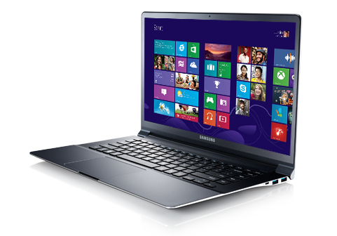
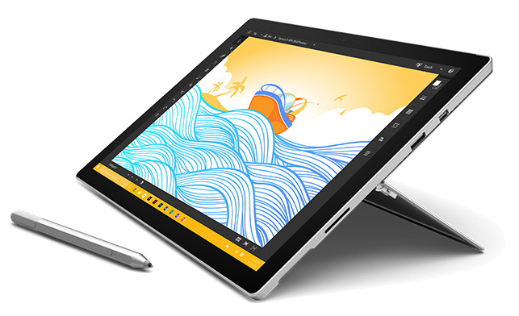

Windows Laptop
The iMac packs high-performance processors into an aluminum and glass enclosure with up to 40 percent less volume than its predecessor and an edge that measures just 5 mm thin. The idea behind iMac has never wavered: to craft the ultimate desktop experience. The best display, paired with high-performance processors, graphics, and storage — all within an incredibly thin, seamless enclosure. And that commitment continues with the all-new 21.5‑inch iMac with Retina 4K display. Like the revolutionary 27‑inch 5K model, it delivers such spectacular img quality that everything else around you seems to disappear. Adding up to the most immersive iMac experience yet — and another big, beautiful step forward.
Surface Pro
iPad has always offered a uniquely simple yet powerful and immersive experience. It’s an astounding piece of glass, capable of unlocking new ways of thinking, creating, and learning. Now, with its expansive Retina display and uncompromising performance, iPad Pro adds a new dimension to everything you do. Like nothing before it, iPad Pro lets you be more creative and more productive — at an entirely new scale. iPad Pro is more than the next generation of iPad — it’s an uncompromising vision of personal computing for the modern world. It puts incredible power that leaps past most portable PCs at your fingertips. It makes even complex work as natural as touching, swiping, or writing with a pencil. And whether you choose the 12.9-inch model or the new 9.7-inch model, iPad Pro is more capable, versatile, and portable than anything that’s come before. In a word, super.
Windows Phone
iPhone 7 and iPhone 7 Plus dramatically improve every aspect of the iPhone experience, making them the best, most advanced iPhones ever featuring breakthrough new camera systems, the best battery life ever on an iPhone, and water and dust resistance. AirPods introduce an effortless wireless listening experience that has never been possible before, packed with high quality audio and long battery life. iPhone SE is the most powerful phone with a 4-inch display.iPhone 7 dramatically improves the most important aspects of the iPhone experience. It introduces advanced new camera systems. The best performance and battery life ever in an iPhone. Immersive stereo speakers. The brightest, most colorful iPhone display. Splash and water resistance.1 And it looks every bit as powerful as it is. This is iPhone 7.